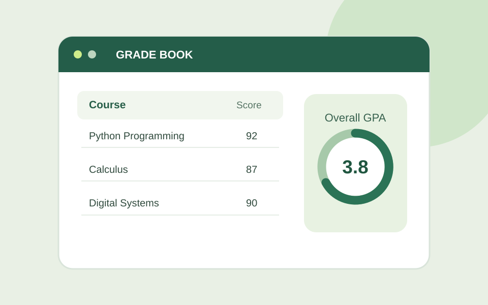
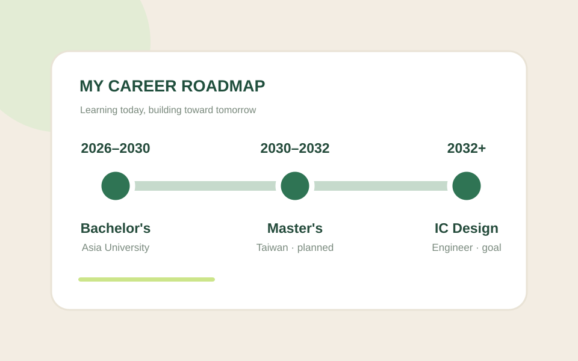

Web design · 2026
Personal Portfolio
A four-page static website with consistent navigation, clear layouts and mobile-friendly styling.
DetailsA mix of web development, Python programming and personal career planning. Each project has a short summary and more information below.
A four-page static website with consistent navigation, clear layouts and mobile-friendly styling.
Details
A command-line Python program for tracking course results and calculating credit-weighted GPA.
Details
A structured roadmap connecting my semiconductor studies with a future career in IC design.
DetailsPurpose: extend a single-page introduction into a four-page portfolio. What it includes: Home, About, Projects and Contact pages, a shared navigation bar, responsive layouts, and essential SEO metadata. The site is built using HTML and CSS without JavaScript.
Purpose: make grade records easier to organize. The Python command-line application lets users add, update, delete and view courses, then calculate overall and semester GPA using course credits. It saves data in a JSON file and includes automated tests.
Purpose: turn my long-term ambitions into a realistic roadmap. The plan covers self-assessment, semiconductor career research, skill gaps, study milestones, possible master's programmes in Taiwan and professional goals through 2040.